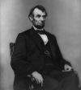

İç savaşı kazanan, birliği koruyan ve köleleri özgürlüğe kavuşturan Başkan Abraham Lincoln (1809–1865) Amerikan tarihinin en fazla hayranlık duyulan liderlerinden biridir. O, kabine sekreterlerinden birinin sözleriyle “dünyanın gördüğü en mükemmel yönetici”ydi.

Lincoln, Kentucky’de ahşap bir kulübede doğdu. Ailesi o çocukken sık sık taşındı. Büyük ölçüde kendi kendini yetiştirmişti. Bir nehir gemisinde çalışmak ve likör ticareti de dahil olmak üzere pek çok işte başarısız oldu. 1837 yılında İllinois Barosu’na kabul edildi. İlk politika denemesi tam bir fiyaskoydu. Kongreye bir Whig olarak seçilmişti. Meksika Savaşı’na karşı oy kullandığı için sadece bir dönem bu görevde kalabildi. Savaşın meşru olmadığını düşünüyordu. Whig muhalefetini bu yöne sevk ederek savaş yanlısı seçmenlerin tepkisini çekmişti.
İllinois’e döndükten sonra avukatlık yapmaya devam etti. Cumhuriyetçiler’e katıldı. Parti henüz yeni kurulmuştu ve sloganı “Özgür Toprak, Özgür Emek, Özgür İnsan”dı. Cumhuriyetçiler batıya yayılmayı ve köleliği kısıtlamayı savunuyordu. Kölelik, o günlerde ulusal politikanın en çok tartışılan konusuydu. Lincoln, 1858 yılında İllinois Senatosu için parti adayı oldu. Ancak Stephen Douglas (1813–1861) karşısında yarıştığı seçimi kaybetti.
1860 yılında Cumhuriyetçi Parti’nin başkan adayı oldu. Güneyli vekiller Lincoln’ün köleliği kaldırmaya niyetli olduğunu anlamışlardı. Başkan seçilmesi üzerine birer birer birlikten ayrılma yönünde oy kullanmaya başladılar. Ayrılma krizi, Güneyliler 1861 Nisanı’nda Güney Carolina’daki Birlik Ordusu mevzilerine saldırınca bir savaşa dönüştü.
Savaş sadece Lincoln’ün liderliğini test etmiyordu. Aynı zamanda bir demokrasi savaşıydı. Lincoln, sınırlı askeri bilgisine rağmen -1832 yılında İllinois milisinde hizmet etmişti- komutanlarını Konfederasyon’un üzerine gitmeleri için yönlendirdi. Yaşanan kayıplara rağmen savaşa halk desteği sağlamayı başardı.
1864 yılında ABD’nin savaş döneminde yapılan ilk seçiminde yeniden aday oldu. 1865 yılının Mart ayında tekrar seçilerek göreve başladığında birliğin zaferi ufukta gözükmüştü. Zafer konuşmasında Güney’in kısa sürede affedileceğine dair sinyaller verdi. Ancak bir sonraki ay suikaste kurban gitti. Oysa ki suikastten beş gün önce Robert E. Lee (1807–1870) teslim olmuştu. Üstelik sadece birkaç hafta sonra Konfederasyon tamamen çökecekti.
Ek Bilgiler
1- Lincoln, ilk on üç kolonide doğmayan ilk ABD başkanıdır.
2- 1867 yılında Nebraska’nın başkenti adını Lincoln’den aldı. Üç başka eyalet başkenti de isimlerini ABD başkanlarından almıştır: Missouri’deki Jefferson City, Mississippi’deki Jackson ve Wisconsin’deki Madison.
3- Lincoln’ün Demokrat Partili rakipleri “Copperheads” (Bakır Kafalar) olarak bilinir. Bu, zehirli bir yılan türünün adından türetilmiş alaycı bir ifadedir.